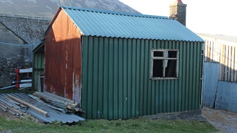

Siop Mary Fron
Bu’r Fron yn gartref i Ifan Pritchard a’i wraig Maggie. Wedi hynny, gosodwyd yr eiddo i’w nith, Mari, a’i gŵr William Gruffydd. Bu Mari’n rhedeg siop lewyrchus yno, sef ‘siop bob dim’ a gellid prynu siwtiau wedi’u ffitio’n arbennig. Byddai William Gruffudd yn teithio milltiroedd ar feic, neu feic modur a seidcar, i fesur cwsmeriaid. Roedd y siop yn llawn trugareddau wedi eu gwasgaru braidd yn ddi-drefn, ond roedd trefn ar bopeth ym mhen Mari. Daeth John James, y crydd i fyw i’r Fron yn ddiweddarach.
 Llun o Mari Fron a Lydia Worsley.
Llun o Mari Fron a Lydia Worsley.
Cofia Eurwen Jones bod siop Mari Fron yn gwerthu dafedd cartref. Cofia Gwyn Elis, Plas bod y siop yn gwerthu dillad. Roedd gan Mari Fron ddant aur. Yn y 1940au gellid cael pob math o ddillad yn cynnwys blwmars gan Mari Fron, a byddai hithau’n sefyll tu allan i’r cwt sinc, yn ei chot wen. Wedi i Mari adael y Fron, daeth John James y crydd i fyw yno. Roedd ganddo goes bren. Yn ôl Adam Hughes, symudodd William a Mari i Blaenau, fferm gyfagos, i fyw, ac roedd ei mab, Alan Jones, yn uchel ei barch ym myd y trealon cŵn defaid, gan ennill gwobrau ar lefel genedlaethol.
Dyma rai o ffeithiau a gasglodd Aled Williams, Gorslwyd gyda chymorth caredig Lydia Thomas (Lydia Pritchard, Blaenau):
Am gyfnod, bu’r Fron yn gartref i Ifan Pritchard (1979 - 1952) a’i wraig Maggie, sef rhieni Laura (Trefor), Olwen Ethel (Dolwen) a Nel (Pen y Graig). Wedi iddynt symud oddiyno, gosodasant y lle i Mari, merch Jane oedd yn chwaer i Ifan. Yno bu Mari (Mari Fron i bobl yr ardal, Mari Waedlyd chwedl fy Nhad, ei chyfyrder) yn byw gyda’i gŵr William Gruffudd a’u mab Alan (Alan Fron yn ddiweddarach Lleuar Bach). Daeth Alan Jones yn adnabyddus fel arbenigwr rasus cwn defaid ac yr unig un gofiaf i fod yn berchen modur Jaguar yn Llithfaen yn niwedd y 50au.
Bu Mari’n rhedeg siop lewyrchus yno, sef ‘siop bob dim’ a gellid prynu siwtiau personol wedi eu creu’n arbennig gan deiliwr. Byddai William Gruffudd yn teithio milltiroedd ar ei feic o amgylch yr ardal i lefydd fel Mynydd Nefyn i gymeryd mesuriadau corfforol rhai o’r cwsmeriaid. ‘Roedd y siop yn llawn trugareddau i’w gwerthu wedi eu gwasgaru braidd yn ddi-drefn yn ôl y sôn, ond ‘roedd lleoliad pob peth ym mhen Mari. Yn wir, byddai rhai nwyddau’n cyrraedd yno drwy drefniant gyda chapteiniaid llongau (coasters) alwai ym mhorthladd Nant Gwyrtheyrn i lwytho setiau ithfaen ar gyfer strydoedd Lerpwl a Bryste. Wrth gwrs, byddai’r llongwyr wrth eu boddau yn derbyn cigoedd a chynnyrch blasus yr Hen Wlad. Yn rhyfeddol gyda phorthladdoedd cyffelyb o amgylch yr arfordir cyfagos, gwisgai rhai pobl ddilladau ffasiynnol iawn ym Mhen Llŷn oedd yn tarddu’n uniongyrchol o siopau’r dinasoedd mawrion. ‘Roedd cludiant môr yn llawer mwy cyfleus na thramwyo hyd lonydd clonciog, maith yr adeg honno.
Ond byddai’r Fron yn adnabyddus am ardd doreithiog a chysgodol dros ben uwchlaw’r tŷ. ‘Roedd William Gruffudd wedi cario tail anifeiliaid o ffermydd ei deulu dros y blynyddoedd a’i daenu yno a throi’r pridd yn gyson a thrylwyr nes creu man tyfu heb ei ail. Gan fod y tir mynyddig ychydig yn fawnog ac asidig byddai’n ddefnyddio calch i’w sefydlogi. Yno cynhyrchid ffrwythau a llysiau iach yn flynyddol a byddai yno goeden afalau ac, yn anarferol i’r ardal, coeden grawnwin. Gyda llaw, ‘roedd coeden grawnwin arall gyffelyb gerllaw yn nhalcian tŷ Matt Williams (Matt Bach) sef Delfryn.
Cofiai Lydia fynd i’r Fron yn aml gyda’i Mam, Blodwen Pritchard (Blaenau), a byddai’r oedolion yn sgwrsio a hel straeon. Unwaith, sleifiodd Lydia drwy’r drws i’r cefn ac wedyn i’r ardd. ‘Roedd William Gruffudd wedi gadael yr un afal ar ôl ar ei goeden y tymor hwnnw er mwyn iddo dyfu’n fawr ac efallai ennill gwobr. Ond ‘roedd ei liw a’i faint hudolus yn ormod o demtasiwn i’r ferch fach ddireudus a chafodd hi fwynhad pur yn gwledda arno yn haul yr hydref. Pan ddychwelodd i’r ty gyda’r cnewyllyn a chryn euogrwydd, synodd na chafodd hi air croes gan Mari.
Ymhen amser, symudodd Mari a William Gruffudd ac Alan i Blaenau Canol. Wedyn bu’r Fron yn gartref i Twm Ellis a’i wraig Bessie, sef rhieni John a Len hyd nes y symudon nhw i fyw i Plas i lawr y lôn pan oedd yr hogiau’n bur ieuanc.
Hon oedd siop wreiddiol Mary Fron sydd ar hyn o bryd yn Tan yr Hafod.
Yr un a gofiaf i yn byw yno oedd John James. Hen lanc gweddol fychan o gorff, hynod o glen, a difyr ei sgwrs gyda ddiddordeb rhyfeddol yn nhechnoleg y cyfnod. Ni chofiaf John James heb ei het frown a byddai’n tynnu fy nghoes drwy godi fy nghap gerfydd y botwm bach metel ar ei ganol. Roedd yn bur gloff ond doedd allt y Fron ddim yn rhoi poendod iddo. Roedd ganddo frawd, Robin William weithiai fel setiwr yn y chwarel a chofiaf ef yn rhoi cymorth i Caradog Jones, Tyn y Mynydd i osod ffens derfyn rhwng Tai Caernant a’r Wal Fawr. Byddai cetyn yn ei geg yn dragwyddol. Yn weddol aml, byddai efeilliaid yn dod i‘w weld o Landudno gan barcio ei Ford Pilot V8 du ar y lôn ger y tŷ. Ganwyd un yn hwyr ar y diwrnod olaf o Fai a’r llall yn fuan ar diwrnod cyntaf o Fehefin ac am y rheswm hwnnw May a June oedd eu henwau.
Cyn f’amser i, bu John James yn gweithio fel crydd mewn gweithdy pwrpasol ar ochr yr allt o flaen y ty. Dim ond y grisiau a’r palmant condrid a osodwyd o’i flaen (ac sydd yn dal yno yn rhannol) a gofiaf i. Symudwyd y gweithdy yn ei grynswth i gyffiniau’r Hafod lle ei defnyddiwyd i wneud rhan o dŷ unllawr.
Difyr fyddai sgwrsio â John James ar fy ffordd adref o’r ysgol. Fel y soniwyd, dangosai frwdfrydedd tuag at dechnoleg a byddai ganddo ddamcaniaethau difyr a chwestiynau dwfn ar brydiau. Bu hyn y ddylanwad da arnaf fel pwt o wyddonydd ieuanc ar y pryd.
Fel enghraifft, byddai ‘fflashlamp’ yn hanfodol yn y cyfnod hwnnw a chredai John James y gallai roi bywyd newydd ynddynt drwy dorri twll bychan yn eu pen a rhoi ychydig o ddŵr i mewn. Wedyn eu gadael ger popty’r ‘range’ dros nos i gynhesu. Pur ddirmygus oeddwn ar y pryd, ond pan ddysgais fwy am fatris, mae’n wir eu bod yn fwy effeithiol tra’n gynnes ond ‘does dim sicrwydd am y dŵr, beth bynnag.